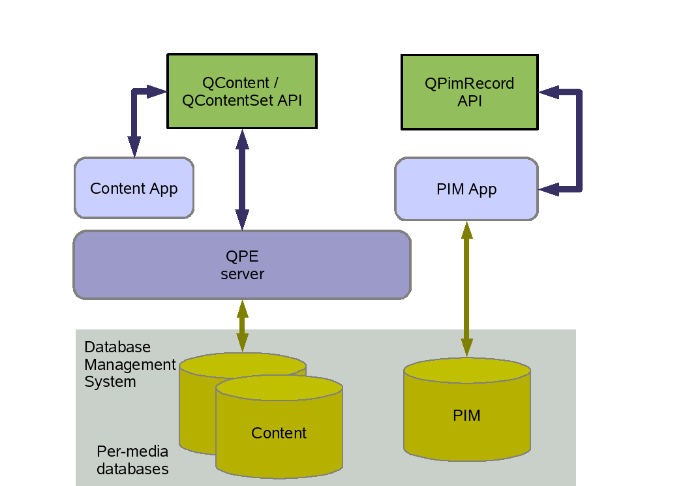

|
Home · All Namespaces · All Classes · Grouped Classes · Modules · Functions | |
This document describes the use and operation of relational database systems in Qt Extended and should be used in conjunction with the Database Policy document.
Qt Extended relies on relational database systems for a number of purposes and functions as summarized in the following table:
| Function | Description | Created | Visibility |
|---|---|---|---|
| System | Persistent system data and meta information, eg track VPN & PKI certificates, system tones, system categories. | ROM image | Not user visible |
| Content | Qt Extended Document system; Categories | ROM image / Device run-time | User visible |
| PIM | Qt Extended Personal Information Management data, including Contacts (Address book), and Calendar | ROM image / Device run-time | User visible |
| Application | Additional Qt Extended applications, Custom applications, 3rd party or installed applications | Device run-time | Depends on app |
For the purposes of Qt Extended, a relational database is defined as a system of managed data stores, which are queried and updated using Data Manipulation Language statements.
The most popular data manipulation standard is SQL, which is standardized in ISO/IEC 9075:1999(E) Information technology - Database languages - SQL.
An SQL relational database system is organized as:
where each is made up of the next, ie Databases are made up of Tables, which are made up of Columns. Additionally within Databases, a Table may have one or more indexes. Non-SQL-99 standard extensions such as stored procedures, relational constraints and triggers are also part of the database.
A Table may be TEMPORARY. Such tables are lost when the database connection is dropped, and may be used for staging large or complex queries.
More on basic or general theory regarding databases can be found in online sources or textbooks.
For the details of Qt Extended system organization see Schema below.
A relational database system may contain a number of discrete databases used to partition the system by purpose or function or to allow databases with different characteristics to coexist. For example databases may have:
Databases may have back-end storage on temporary file-systems or removable media. Such transient databases are a different concept to a temporary table. Transient databases are lost when the storage system is removed or reset (for example, tmpfs on reboot).
The following databases are used in Qt Extended:
| PREFIX | The System function of Qt Extended is backed by a read-only database. The storage back-end is associated with the Qt Extended prefix, which is the root of the Qt Extended ROM image on the file-system. |
| CONTENT | The Content function is provided by a separate database It includes the Categories table accessed by PIM. This database is read-write, and files used by the storage engine are located in a user home directory. |
| PIM | The PIM function is provided by a separate database which reduces locking contention and namespace issues with the Content database. The Categories table, where required is accessed from the Content database. This database is read-write, and files used by the storage engine are located in a user home directory. |
| MEDIA | Databases with the same identical schema as the HOME database are used for each media card on the Qt Extended device. These Databases are transient and there is one for each media device. |
| APPS | In future releases of Qt Extended other applications will create their own databases. This will allow access control to be used to protect data from corruption by incorrect use. Applications might include optional Qt Extended applications, and/or second- & third-party applications. |
The same schema of PIM + Content Tables is used for PREFIX, HOME and per MEDIA databases.
Other applications are free to use any schema as defined by the Database Policy.
The Content function is maintained as a separate collection of schema entries and has a separate API based around the QContent and QContentSet classes.
PIM has also its own set of schema entries and is accessed via the PIM library and its API via QPimRecord and related classes.
Applications using the PIM API connect to the database directly and execute SQL to update and query the tables in the PIM schema.
However, the Content function has a client-server architecture, as shown in the diagram below, such that only the Qt Extended server process can perform updates and queries on it.

The Content function has this structure for the following reasons:
Typically it is not possible to query or update across databases, and it is best practice to design systems so requirements do not arise for cross-database queries. Currently in Qt Extended cross-database queries are required due to the database per-media architecture. Application code is used to work around the situation, and the client-server architecture mitigates the risks.
Where separate databases are used and queries are required across both, there are two options:
| Cross-database Work-around | Risks |
|---|---|
| Write application code to perform the operations and merge the results as required. | Race conditions, non-transactional performance problems. |
| Employ vendor specific extensions, such as MERGE TABLES or ATTACH DATABASE. | Portability issues - extensions can be factored into a pluggable architecture to avoid this. |
When examining vendor database products great care must be taken with their use of the word embedded. It is used with two different and conflicting meanings:
| Context | Meaning of Embedded |
|---|---|
| Mobile | Suitable for systems with limited resources such as mobile phones and PDAs |
| Integrated | A database used locally and tightly integrated into a single application. |
Note: Integrated databases do not generally support access by multiple processes. Qt Extended is designed to cater for this by using a client server architecture in the case of Content, and by limiting access to a single process in other cases.
Database Systems and their support status are:
| System | Vendor | Status | Embedded |
|---|---|---|---|
| Sqlite | Sqlite.org & D. Richard Hipp | Supported since Qtopia 4.0 | Mobile and Integrated |
| Mimer SQL | Mimer Information Technology AB, Sweden | Supported since Qtopia 4.3 | Mobile |
The Sqlite relational database system is one of the supported systems for Qt Extended. In that system, there is a one-to-one correspondence between actual files on the file-system and Databases. To create a new database in Sqlite, a new database file is created on the file-system which encapsulates all data, relations and indexes.
Generally databases are created by a DML statement, for example the SQL statement
CREATE DATABASE Home_Database;
would create a new database in most SQL based relational database systems.
Application programs cannot or should not make assumptions about the location of the physical storage backing the database. That will depend on the configuration of the system and what vendor it was from.
Some database systems can use raw unformatted partitions (raw block devices), others create a number of files for indexes, journals and meta-data (eg. PostgreSQL), while yet others use a single flat-file structure (eg. SQLite).
Great care needs to be taken in all implementation code not to intermix the notion of Database and Database file, since this would create code that is unlikely to work with other systems.
The Qt Extended Database Schema is split into two separate collections of schema files, one for Content and one for PIM.
Other applications should maintain their own schema files following this model. The table names listed below should be considered as "Qt Extended reserved words" when creating or modifying schema.
The main tables and their purpose are listed here:
| Table | Description |
|---|---|
| Content Functions | |
| content | Contains meta data about Content items available to the device. Items include plain files, such as an MP3 music file, and contained or downloaded content for which there is no clear concept of a file, such as DRM content, or streamed content. |
| mapCategoryToContent | Contains relational mappings between categories and content. Using a mapping table allows multiple tags to be applied to a content item, and the same category to be applied to many contents. |
| locationLookup | paths for file based content, this is primarily a storage optimization to save the cost of storing the full path where it is repeated across a number of content items. The content table contains a foreignKey entry pointing to this table. |
| contentProps | Arbitrary meta-data may be associated with content items via the strings stored in this table. |
| PIM and Content | |
| categories | Lists names and translations of categories, which are tags used to label items in the Content system. The System function uses non-user visible categories to locate system resources such as certificates and system ring-tones. The end-user may create their own categories for sorting Content and PIM items. Two pre-loaded and specially treated categories are Business and Personal. |
| PIM Functions | |
| contacts | Address book entries. This table has over 40 columns, including ones for "firstname" and "nickname". |
| emailaddresses | Email addresses for contacts. Linked to the contacts table by a foreign key. |
| contactphonenumbers | Phone numbers for contacts. Linked to the contacts table by a foreign key. |
| appointments | Events forming part of the calendaring system. |
| tasks | Tasks and TODO entries, also part of the calendaring system. |
| *custom | Each of appointments, tasks and contacts has a freeform field that can be added to create extra data entries. |
| *categories | Each of appointments, tasks and contacts has a category table specific to it. |
This is not a full list of all tables. For comprehensive up-to-date details of the current schema refer to the files in the Qt Extended source tree under:
The Content + PIM database contains embedded versioning information which shows the current version number of that database.
When the schema of that database is changed, the SQL statement files referred to in the resources listing in the previous section are updated so that the current schema version can be obtained by an SQL query.
Previously the mechanism for doing this was an entry PRAGMA user_version 100; in the file:
However this is Sqlite specific, and has been superseded in 4.3 by the schema_versions table, which contains:
The query SELECT MAX(schema_version) FROM schema_versions; will then return the current version number.
The PIM database also maintains a changelog table and a sqlsources table, which contain meta data about updates to the PIM data and identities of data sources. These are intended for use in managing data synchronisation and import/export.
When creating applications which require access or modifications to the Qt Extended database, follow the rules laid out in the Database Policy.
At this time there are no examples of Custom database requirements.
See also QContent, QContentSet, QPimRecord, and Document System.
| Copyright © 2009 Trolltech | Trademarks | Qt Extended 4.4.3 |